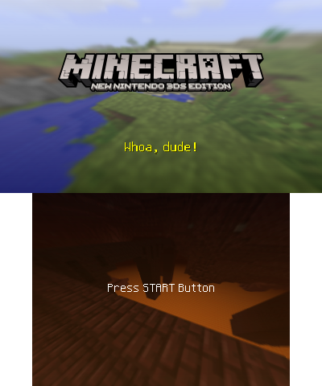

Welcome to the Minecraft: New Nintendo 3DS Edition Wiki!

Minecraft: New Nintendo 3DS Edition was the edition of Minecraft developed by Other Ocean Interactive and Mojang Studios for the New Nintendo 3DS/2DS systems, but was not compatible with the original Nintendo 3DS/2DS systems. It was released digitally on the Nintendo eShop simultaneously in North America and Japan on September 13, 2017, hours after its announcement during a Nintendo Direct, and physically in North America on November 10, 2017. The game was digitally released worldwide on September 20, 2018, one year and seven days after the original release. Updates for this version were discontinued with 1.9.19 on January 15, 2019.
As of 1.9.19, the New Nintendo 3DS Edition has not received new feature updates, such as the Update Aquatic, Village & Pillage, Buzzy Bees, the Nether Update, and so on.
The New Nintendo 3DS Edition's most recent feature update is the Discovery Update.
As of the shutdown of the Nintendo 3DS eShop on March 27, 2023, it is no longer legally possible to digitally download this version of the game, though the game can be redownloaded if it was previously purchased and physical copies still function normally.